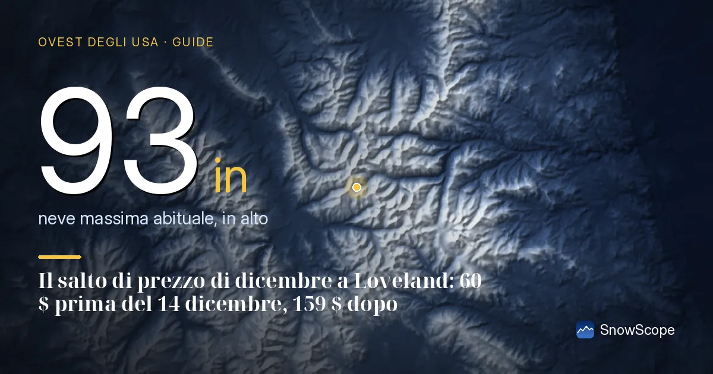

Il salto di prezzo di dicembre a Loveland: 60 $ prima del 14 dicembre, 159 $ dopo
Il salto di prezzo di Loveland il 14 dicembre è netto: i biglietti online da $60 diventano $159 alla cassa. Il problema è che la neve di inizio dicembre è reale ma non profonda, e stai pagando per l'altezza e la speranza piuttosto che per una montagna completamente aperta. I numeri mostrano quali sciatori dovrebbero sfruttare l'offerta e quali dovrebbero aspettare.
Le previsioni neve in tempo reale per Loveland Basin Ski Area nell'app SnowScopeAltezza neve, allerte powder e mappa 3D, gratis.
Cosa ottieni per $60: una scommessa a metà montagna
Un tipico 1 dicembre a metà montagna di Loveland (3.592 m / 11.780 ft), hai 50 cm di neve. Due settimane dopo, entro il 15 dicembre, raggiunge 74 cm. La differenza conta: inizio dicembre è praticabile, ma metà dicembre è più sicuro per una giornata completa.
La metà di tutti gli inverni vede 50 cm o più entro il 1 dicembre a quella quota. Entro metà dicembre le probabilità salgono al 67%, quindi la seconda metà del mese è una scommessa più solida. Il biglietto a $60 ti dà accesso a una finestra più sottile e meno certa.

L'altitudine è il vantaggio di Loveland a inizio stagione
Gli impianti di Loveland vanno da 3.318 m (10.890 ft) a 3.866 m (12.680 ft), rendendola una delle stazioni sciistiche più alte del Colorado. Questa altitudine significa che la neve di inizio stagione dura più a lungo qui che alle stazioni più basse. La neve a metà montagna solitamente si assesta entro la fine di settembre; la base a 3.318 m (10.890 ft) rimane scoperta fino a dopo.
Il 1 dicembre, la base ha tipicamente solo 40 cm, mentre la vetta ha 50 cm. Questo dislivello è tuo alleato a inizio dicembre: scia sopra la quota della base, mantieniti sulle piste preparate, e hai abbastanza con cui lavorare.

Quanto è più sottile inizio dicembre rispetto a metà inverno?
Entro il 25 dicembre, la metà montagna solitamente raggiunge 92 cm. Entro il 31 dicembre, 99 cm. Questo è il 50% più profondo di inizio dicembre. Marzo, il mese più nevoso di Loveland, media 137 cm a metà montagna.
Il trend lungo mostra che inizio dicembre è diventato più sottile. Negli inverni dal 1980-81 al 1994-95, la media del 15 dicembre a metà montagna era 81 cm. Negli ultimi 15 inverni, è stata 58 cm. Lo scorso inverno aveva solo 49 cm in quella data.
Il 4-Pak cambia i calcoli dal 14 dicembre
Una volta che la stagione regolare inizia il 14 dicembre, il prezzo della finestra salta a $159. A quel punto, il 4-Pak di Loveland—quattro biglietti per impianti per $299—diventa l'acquisto più intelligente. Questo è $75 per biglietto, dimezzando il costo al giorno.
Se prevedi due o più visite a metà-fine dicembre, salta l'affare anticipato da $60 e aspetta il 4-Pak. La neve sarà più profonda, la montagna più aperta, e il tuo costo per biglietto sarà inferiore.
Come si confronta: Loveland, Ski Cooper, Wolf Creek
Ski Cooper, vicino a Leadville, mantiene i biglietti feriali a $49 e nei weekend a $99. Un tipico 15 dicembre, a metà montagna ha 66 cm—non molto meno dei 74 cm di Loveland. Wolf Creek, la più nevosa delle tre, ha 87 cm in quella data ma costa $96–$110.
Il biglietto online da $60 di Loveland batte il prezzo nei weekend di Cooper e la tariffa giornaliera di Wolf Creek, anche se la neve è più sottile. Ma se scia nei giorni feriali, Cooper a $49 è più economico e ha quasi la stessa neve di dicembre. Il crollo dei prezzi da $60 a $159 il 14 dicembre è il vero vantaggio di Loveland: compra prima di quella data.
Chi dovrebbe usare il biglietto da $60
Approfitta dell'affare di inizio stagione se scia su piste preparate, tolleri basi di 50–65 cm, e vivi vicino a Denver. Compralo online in anticipo. Evita il prezzo di $119 alla cassa—non ha senso.
Saltalo se vuoi l'intera montagna aperta, hai bisogno di neve fuori pista, o puoi sciare a metà dicembre. Dopo il 14 dicembre, compra un 4-Pak o usa un Indy Pass (Loveland ne è membro; Indy Base costa $419, Indy+ costa $469 per due giorni su ognuna di 300+ stazioni).
Consigli per sciatori
- Compra il biglietto da $60 online soltanto, non alla cassa. L'acquisto anticipato è l'intera convenienza.
- Scia sopra i 3.500 m (11.500 ft) a inizio dicembre; la base è sottile e potrebbe esporre rocce sotto copertura leggera.
- Porta protezione dal vento: la metà montagna è a 3.592 m (11.780 ft) e il vento di dicembre è feroce a quella quota.
- Dal 14 dicembre in avanti, il 4-Pak a $299 ha un miglior rapporto qualità-prezzo rispetto al biglietto alla cassa da $159. Pianifica le tue visite entro quella data.
- Verifica il Dipartimento dei Trasporti del Colorado (CDOT) per chiusure della I-70 e del Tunnel Eisenhower; le corse di inizio stagione significano rischio meteo.
Su questi numeri
Le altezze neve delle località sono la neve più alta sui pendii superiori alla data indicata; sono stime per un'area, non una misura in un punto. Le previsioni possono cambiare. Leggi sempre il bollettino valanghe ufficiale prima del fuoripista.
Bollettini valanghe ufficiali: Colorado Avalanche Information Center
Cita questo articolo
Per ricerca, didattica o stampa: numeri e grafici sono liberamente riutilizzabili con licenza CC BY 4.0 citando così.
SnowScope (2026), Il salto di prezzo di dicembre a Loveland: 60 $ prima del 14 dicembre, 159 $ dopo, https://snowscope.app/blog/it/2026/11/loveland-ski-area-december-deal-2026.html, consultato il 2026-11-14
SnowScope (Atlas Labs). (2026, November 14). Il salto di prezzo di dicembre a Loveland: 60 $ prima del 14 dicembre, 159 $ dopo. SnowScope snow reports. https://snowscope.app/blog/it/2026/11/loveland-ski-area-december-deal-2026.html
BibTeX
@misc{snowscope2026lovelandskiareadecemberd,
author = {{SnowScope (Atlas Labs)}},
title = {Il salto di prezzo di dicembre a Loveland: 60 $ prima del 14 dicembre, 159 $ dopo},
year = {2026},
month = nov,
howpublished = {\url{https://snowscope.app/blog/it/2026/11/loveland-ski-area-december-deal-2026.html}},
note = {Published 2026-11-14 17:47 UTC; accessed 2026-11-14}
}· CC BY 4.0 · Metodi, dati e strumenti →
Loveland Basin Ski Area: neve e temperatura per quota, quest'inverno vs lo scorso (strumenti) →
Segui Loveland Basin Ski Area
Gratis: un messaggio quando arriva la neve e il meteo ogni mattina.